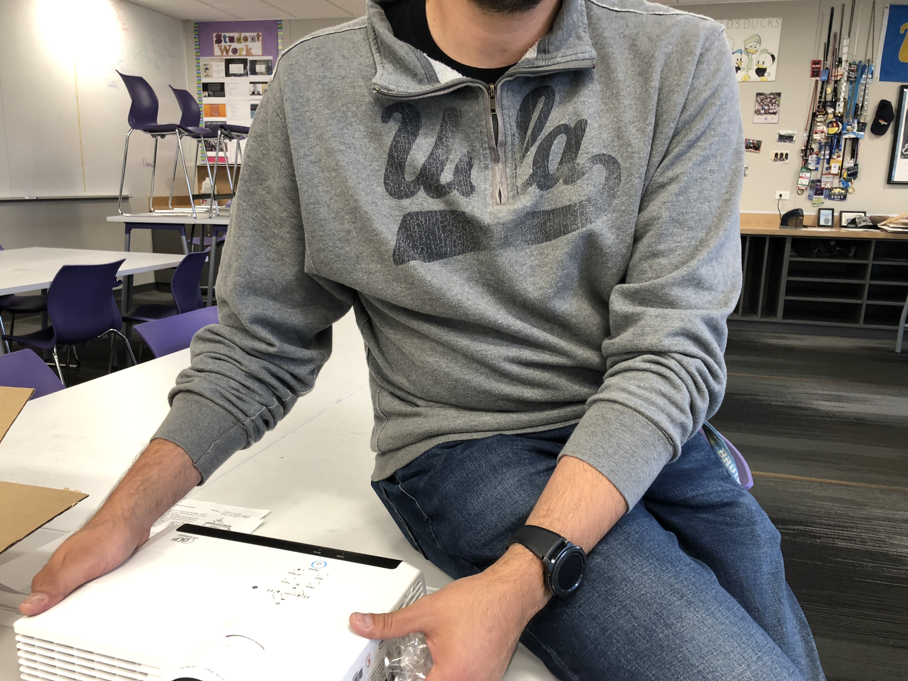
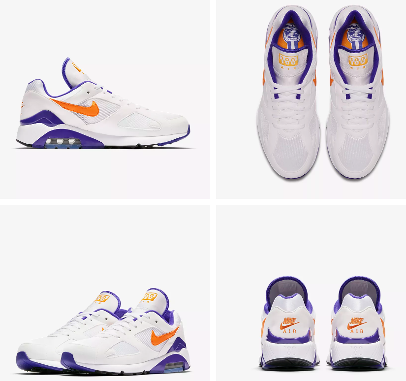
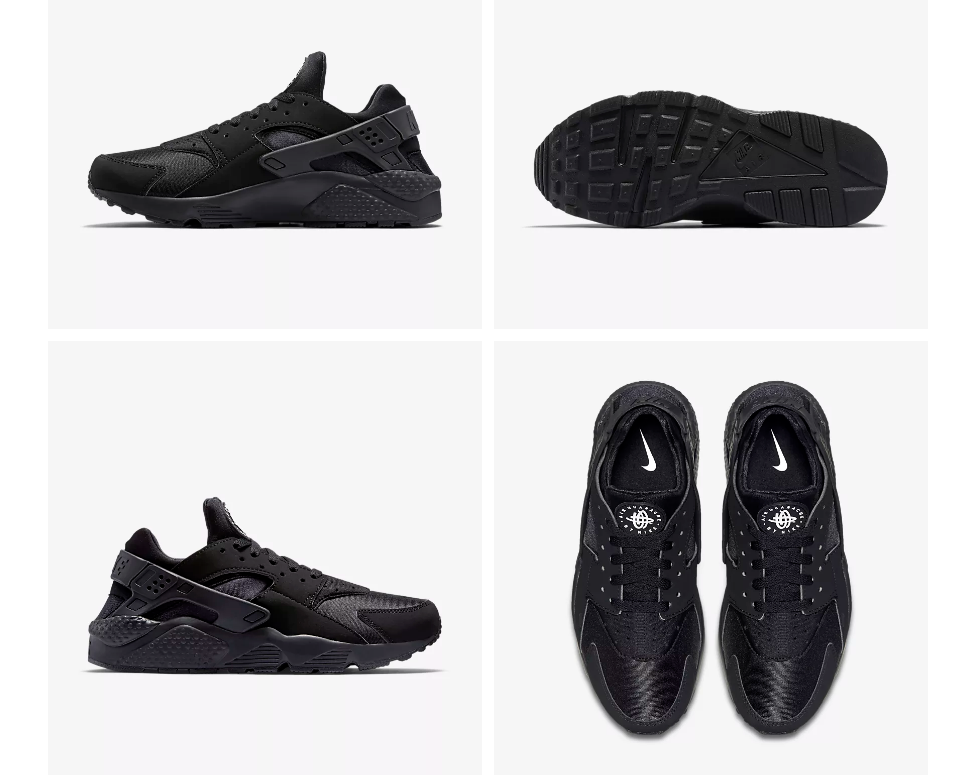

I would describe Donald's style as constant. He constantly wears the same thing, which is DVC apparel. I wouldn't say that this is bad because it surely promotes school culture in the best possible way, but I think there are different ways that he could style his large selection of DVC or UCLA apparel.


I personally think that Donald's clothes could improve by just pairing things that match. As you can see in the photos above this one, Donald typically wears DVC or UCLA apparel, paired with a random set of shoes. What throws his whole outfit off every single time is his shoe choice, so I am only going to suggest shoes that will imrpove his style. Donald can have shoes that are trendy, support his back, but won't break his wallet.

Donald really likes the Nike 180's, so I figured if he likes them, then he should at least wear them in our school colors! He could pair these up with a DVC shirt or a simple tee and make his outfit look effortless.

Donald actually likes the Nike Huarache's, but only in the material of the photo above. He doesn't have a lot of shoes like these, but I think these are a good starting point to elevate his "dad-style." These are a good color because he doesn't have a lot of black shoes and they go with almost everything.